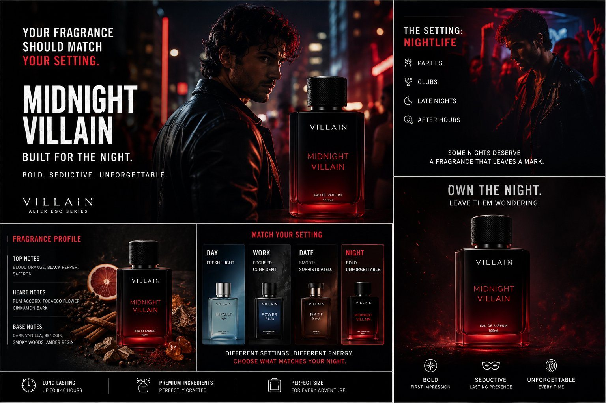
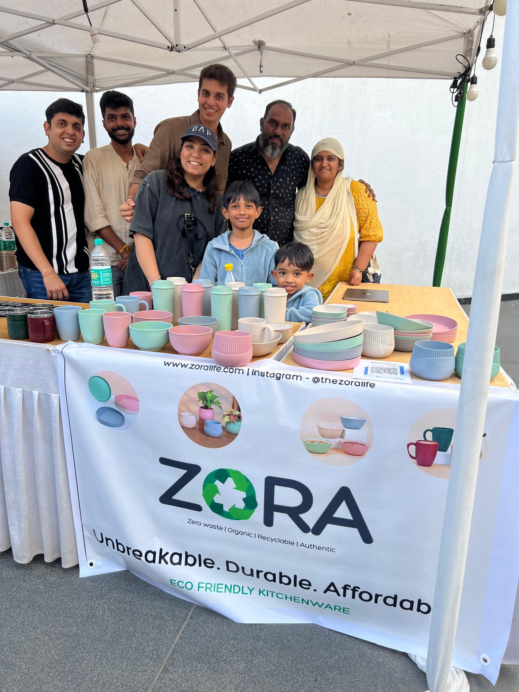
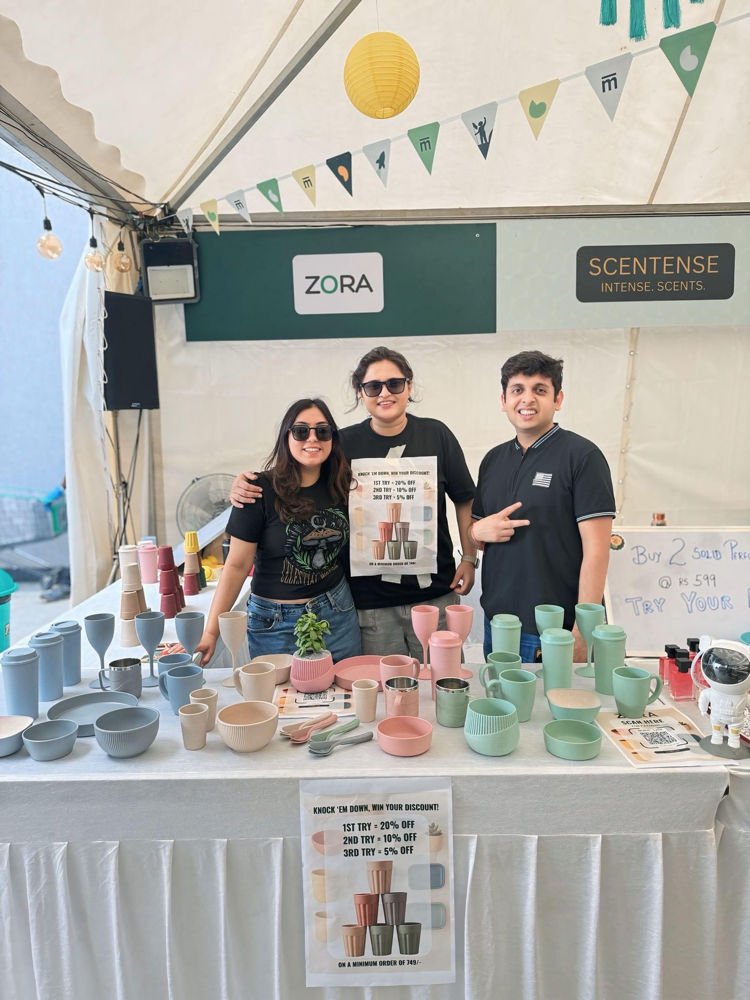
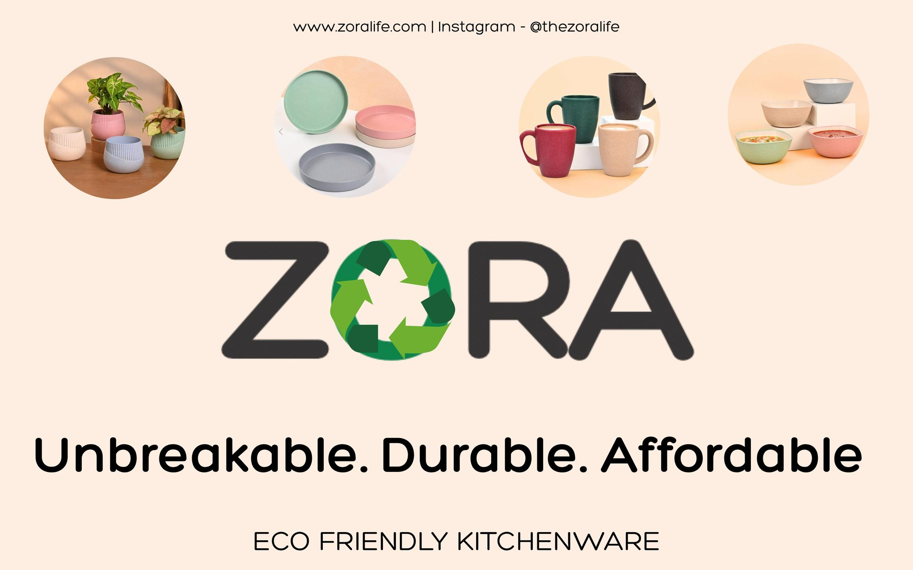

A Mesa School of Business D2C project for unbreakable, microwavable, sustainable kitchenware made from rice agricultural husks — owning the website build, social media, content and short-form video.

Zora makes kitchenware that is unbreakable, microwavable and sustainable — produced from rice agricultural husks. The challenge of the 6-week sprint: take an unfamiliar material to market and find out whether real customers would buy it.
Anisha owned the full build — website, social media, content and short-form video (reels) — and the go-to-market motion behind it.



Rather than assume the category would land, Anisha tested it directly — running offline stalls to put the product in front of real buyers and pressure-test both demand and messaging.
The result: ₹3L+ in revenue within 60 days, validating that the proposition resonated and giving the brand a credible foundation to build on.
Short-form video was central to the launch — here is one of the reels produced for the brand.
If the reel doesn't load, view it on Instagram.